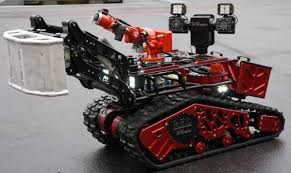
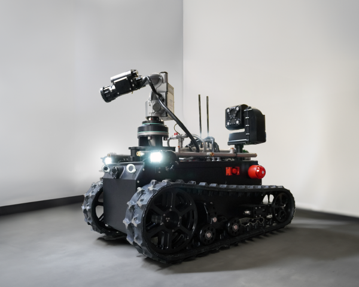

I worked on two main things. First, maintaining the existing robot fleet: I was responsible for all cameras and sensors across every robot. Second, working on a brand new autonomous firefighter robot, which is where most of my time went. I handled the AI, computer vision, sensors, and decision-making side of it.
The autonomous robot stays parked in a building's parking lot or factory, on standby. When a fire breaks out, it navigates to the scene on its own, finds the source of the fire, and either extinguishes it or holds position spraying water until firefighters arrive. Then it returns to its spot.
The Challenge: Worst-Case Everything
This robot goes into active fire scenes. That means every system had to be designed for the worst case, not the average one.
Smoke kills the RGB camera feed. Models trained on clear images just fail.
Lighting is completely unpredictable, anywhere from pitch black to blinding flames.
People are running randomly across the scene with no predictable pattern.
The map is unknown. The robot has no prior knowledge of the layout it's navigating.
1) Human Detection in Smoke using RGB Camera
I trained a neural network and built the full detection pipeline to find people even when there's heavy smoke in the camera feed.
A model trained on clean images doesn't hold up in a smoky environment. I had to build and validate the pipeline specifically on smoke-degraded data to get it to work reliably.
2) Fire Detection: RGB + Thermal Fusion
Once the robot reaches the fire, it needs to pinpoint the source to aim the water pump at it. I combined the RGB camera with a thermal camera to do this.
Neither sensor works well on its own here. RGB struggles with smoke and extreme lighting. Thermal alone lacks spatial precision. Together they cover each other's blind spots: you can catch hidden heat sources and large fires that either sensor would miss solo.
3) Autonomous Navigation
I implemented Dijkstra's algorithm for path planning, routing the robot from its home point to the fire location and back on the fastest available path.
4) Obstacle Detection
I set up 16 ultrasound sensors placed around the robot. They all work together so the robot can detect obstacles even in deep smoke where cameras are blind.
Using an array of 16 sensors instead of a single one makes the detection much more reliable. A lone sensor gives unreliable readings in a chaotic environment. The full array doesn't.
5) Simulation and Real Robot
All systems were developed and validated in Gazebo simulation with RViz for visualization before going anywhere near real hardware.
I worked on both the simulation environment and the real robots, and we tested everything on real fires we set up ourselves.
Existing Fleet


1) Hardware Selection. I researched cameras and sensors for the existing robots, contacted suppliers, tested the hardware options, and selected what worked best for each robot.
2) Low-Latency Camera Streaming. I wrote C++ code on Ubuntu to stream live camera feeds from the robots to a remote control station over RTSP. The goal was the lowest possible latency since operators need real-time vision to make decisions. I also had to balance that against memory and bandwidth limits, as it all runs on embedded hardware out in the field.